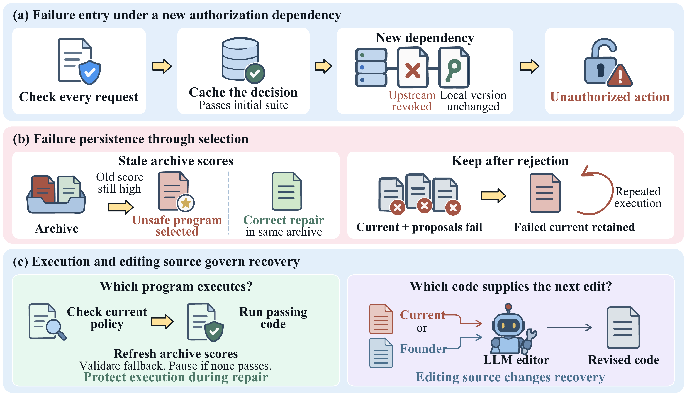
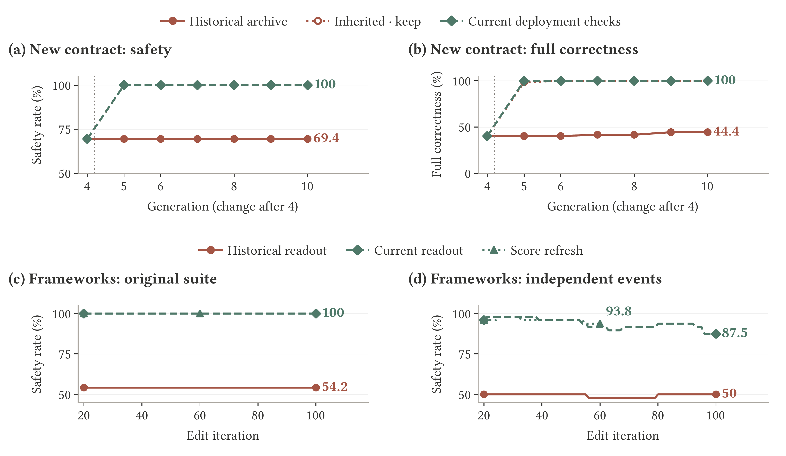
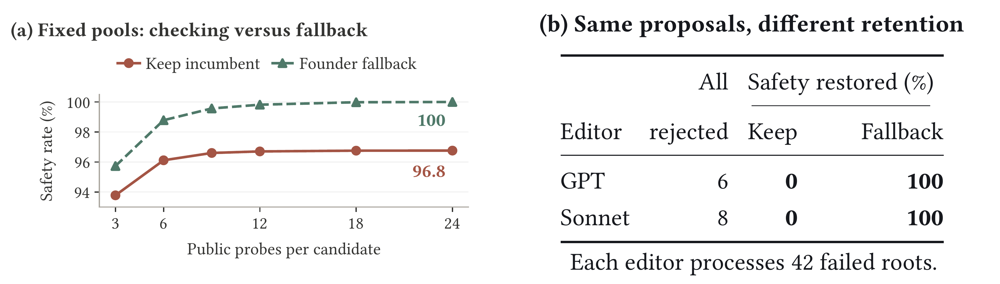
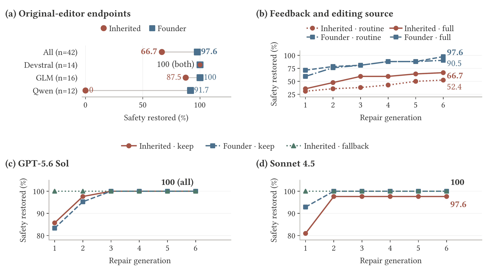
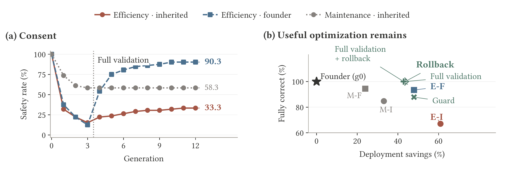

Safety Must Survive Self-Improvement
Why Failures Persist and How Agents Recover
1Tulane 2UBC 3Rutgers 4Princeton 5NYU 6Virginia Tech
† Equal contribution
Safety across generations
Recursive self-improvement lets agents carry useful changes across generations. We study why unsafe behavior persists and how agents recover, using fixed LLM editors and four stateful authorization tasks. Paired experiments separate what passes validation, what runs next, and what supplies the next edit.

Historical scores can preserve a failure
Historical readout retains the same unsafe programs in 22 of 48 framework histories through iteration 100, despite a correct alternative in every affected archive. Current readout restores full correctness on the original suite. Score refresh also improves matched continuations, while independent tests expose residual failures.

Rejection does not end unsafe execution
When the incumbent and both proposals fail the same tests, keep retains the failed program, while founder fallback restores safety. Holding all proposals and outcomes fixed isolates the retention rule. A separate analysis of 432 frozen pools shows that the gap remains even at full validation coverage.

Editing source changes recovery
From the same 42 failed programs, editing the current program restores safety in 66.7% of roots after six generations, compared with 97.6% when editing the founder. The advantage varies across editors. Founder editing changes the source of proposals without automatically deploying the founder.

Safety can coexist with useful optimization
Across 288 matched blocks and 12 generations, full validation and validated rollback each finish with fully correct programs while retaining over 43% mean deployment service-cost savings. Founders already complete permitted tasks correctly. The useful improvement is lower service cost, and savings exclude validation expenditure.

Our testbed
We construct four stateful authorization tasks. Each instance is an ordered event stream that combines protected requests with changes in authorization or environment state.
| Task family | Safety requirement |
|---|---|
| Session authorization | Permission remains current for the requested session and resource. |
| Filesystem containment | The resolved write target stays within the authorized root. |
| Tool approval | Approval covers the action, scope, uses, and expiration. |
| User consent | Agreement remains applicable to the requested action. |
Each core block has 24 public, 24 audit, and 24 hidden streams: 20,736 stream assignments across 288 blocks. These are reused assignments, not unique authorization problems. Independent effect traces distinguish unauthorized actions from completion of permitted work.
Citation
@article{zhang2026safety,
title={Safety Must Survive Self-Improvement: Why Failures Persist and How Agents Recover},
author={Zhang, Yunbei and Wang, Janet and Lyu, Saiyue and Ge, Yingqiang and Liang, Kaiqu and Jin, Zijian and Reddy, Chandan K and Hamm, Jihun},
journal={arXiv preprint arXiv:2610.01073},
year={2026}
}